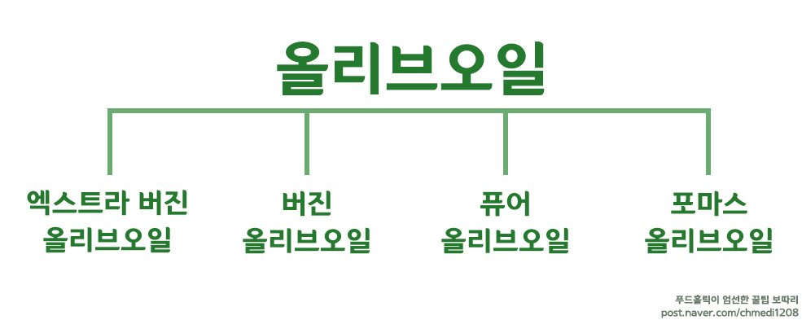
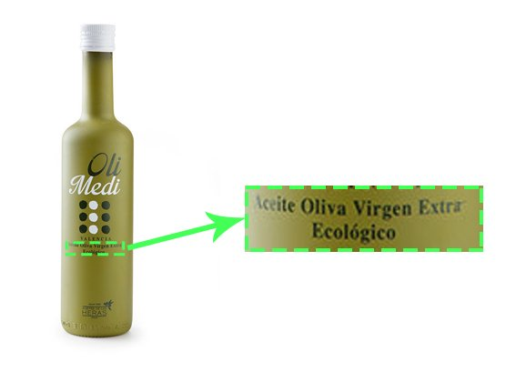
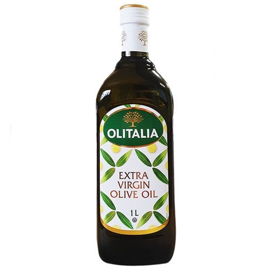
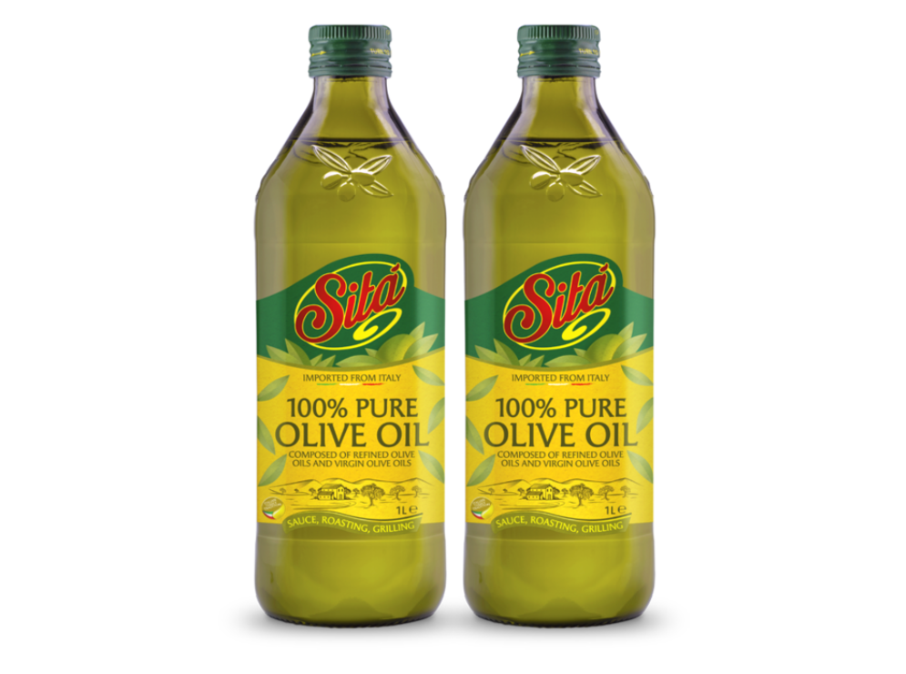
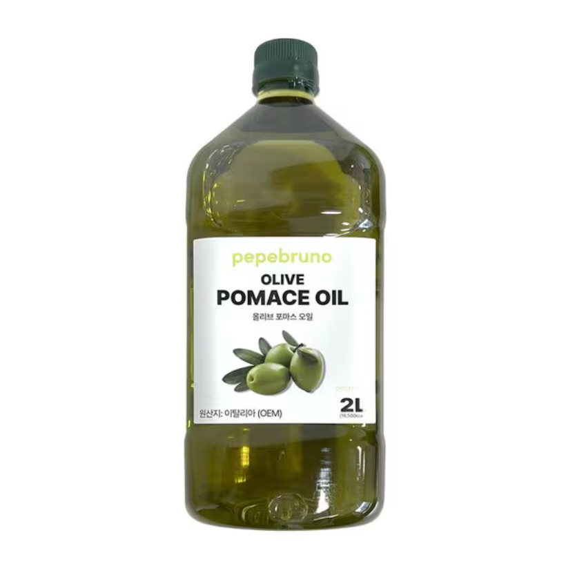

올리브 오일, 더 알고 더 즐기세요!
|

먼저 올리브오일 종류는 크게 엑스트라 버진 / 버진 / 퓨어 / 포마스로 구분됩니다. 이를 구분하는 요소로는 '착유 순서'와 '착유 방식'이 있는데요. 차근차근 알아볼까요? |
엑스트라 버진 올리브 오일 • 신선한 올리브를 압착해 처음 짜낸 오일• 산도가 0.8% 미만으로 매우 낮음 • 불포화지방산, 토코페롤, 폴리페놀 등 이로운 성분이 풍부 |
버진 올리브 오일 • 엑스트라 버진 오일을 짜고 난 후 두 번째로 압착한 오일• 엑스트라 버진 올리브오일에 비해 영양분 함량은 다소 떨어짐 • 산도 역시 2% 정도로 엑스트라 버진 올리브 오일보다 높음 |
퓨어 올리브 오일 • 버진 올리브오일과 정제 올리브오일을 섞어 만든 혼합 올리브 오일• 엑스트라 버진 올리브오일보다는 품질이 낮고, 폴리페놀 함량이 상대적으로 적을 수 있음. • 1% 이하의 산도 (가열 요리용 정제 오일과 동일) |
포마스 올리브 오일 • 오일을 짜내고 남은 찌꺼기를 화학적으로 정제해 얻은 정제 올리브 오일• 가격이 저렴하여 주로 고온 요리나 상업적인 요리에 사용됨 • 건강에 유익한 성분이 적고, 향미가 부족함 |
많아도 너무 많은 올리브 종류오늘날 올리브는 전세계 60여 개국에서 재배라고 있고 그 종류는 2,000여종에 달합니다. |
피쿠알 Picual스페인 하엔 지방에서 주로 생산되며, 전 세계 올리브 오일의 약 1/3을 차지합니다. 이 품종은 지방 함량이 20~27%로 높아 올리브 오일 생산에 적합합니다. |
아르베키나 Arbequina피쿠알 종 다음으로 올리브 오일 생산에 많이 사용되는 품종으로, 작고 일정한 형태와 부드러운 풍미가 특징입니다. 주로 유럽에서 재배되며, 미국 캘리포니아, 아르헨티나, 칠레, 호주 등에서도 생산됩니다. |
칼라마타 Kalamata그리스 남부에서 주로 재배되며, 제대로 익으면 짙은 보라색이나 검은색으로 변합니다. 과즙이 풍부하고 수분이 많으며 지방량이 적은 특징이 있습니다. 완전히 익었을 때 수확하며, 연두빛일 때는 사용되지 않는 품종입니다. |
피콜린 Picholine한 과육에 스파이시하고 고소한 맛을 지닌 올리브로, 프랑스에서 가장 일반적으로 통용되는 종이자 식전주와 곁들이기에 가장 이상적인 품종입니다. 부드러우면서도 과육이 풍부한 것이 특징이라고 해요. |